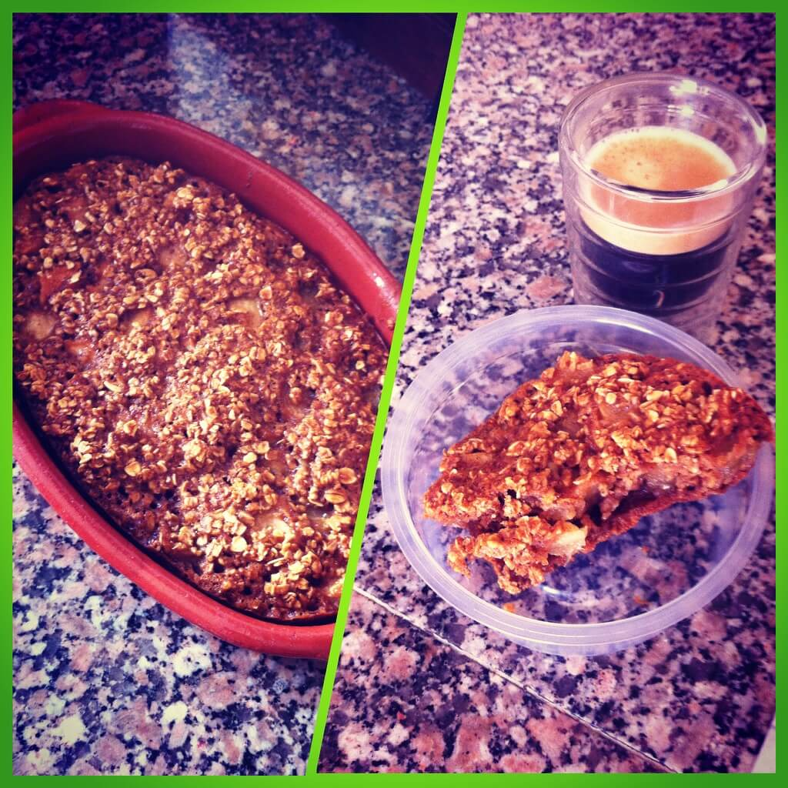

Mais uma receita muito boa e saúdavel para quando vos apetecer um sobremesa ou um lanche doce.
Aqui segue a receita:
– 1 Ovo
– 1 Maçã
– 2 colheres de sopa de Mel
– 2 Chávenas de Aveia
– 3 Colheres de Sopa de Polvilho Doce
– 1 Colher de café de bicarbonato de sódio
– 1 raspa de Limão
– 1 colher de chá de aroma de baunilha
– Canela a gosto(opcional)
Ora bem, batem o ovo e juntam ao mel e batem tudo muito bem. Depois junta-se a aveia e bate-se ainda melhor.
Parte-se a maçã aos bocadinhos e mistura-se tudo. Pré aquece-se o forno a 250 graus e juntam-se o resto dos ingredientes.
Depois é só esperar 15 minutos e ir estando com atenção ao forno.
